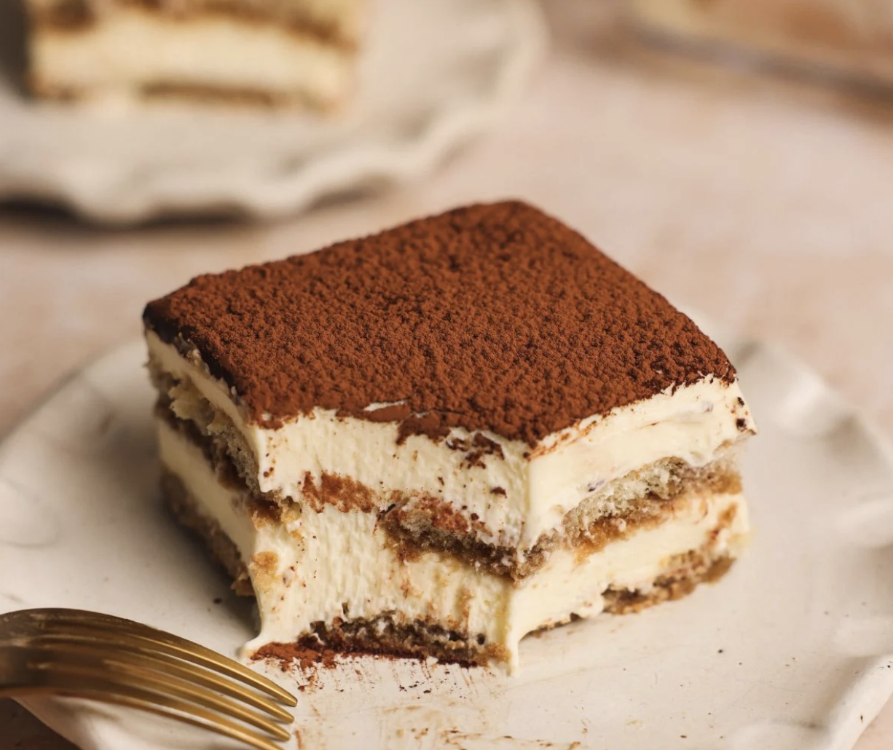

Tiramisu
Home

Description
Tiramisu is a classic Italian dessert known for its rich yet delicate layers of flavor and texture. It typically consists of espresso-soaked ladyfinger biscuits (savoiardi) layered with a smooth mixture of mascarpone cheese, eggs, and sugar, then topped with a dusting of cocoa powder. The result is a light, creamy treat that balances bitterness, sweetness, and a hint of tang.
The name "tiramisu" translates to "pick me up," a nod to the energizing combination of coffee and cocoa. Often served chilled, tiramisu is both elegant and comforting—an enduring favorite that has inspired countless variations around the world.
Ingredients
- 1 package Ladyfingers
- 8 ounces Mascarpone Cheese
- 1.5 cups Cold Coffee (use good espresso)
- 1.5 cups Heavy Whipped Cream
- 1/3 cup Granulated Sugar
- 1 teaspoon Vanilla Extract
- 3 tablespoons coffee flavoured liqueur (optional)
- Cocoa Powder (for dusting)
Steps
- Beat the mascarpone, cream, sugar, and vanilla together until stiff peaks.
- Dip lady fingers. Add the espresso and liqueur (if using) to a shallow bowl and dip the lady fingers on both sides (don't let them soak–just a quick dip!)
- Layer mascarpone. Smooth a layer of the mascarpone/whipped cream mixture on top of the lady fingers.
- Repeat. Add another layer of lady fingers (dipped in coffee and liqueur) and another layer of cheese mixture. Dust with cocoa powder.
Note: Tiramisu is even better when made in advance, allowing the flavors to blend! It will keep in the refrigerator for 2 to 3 days.